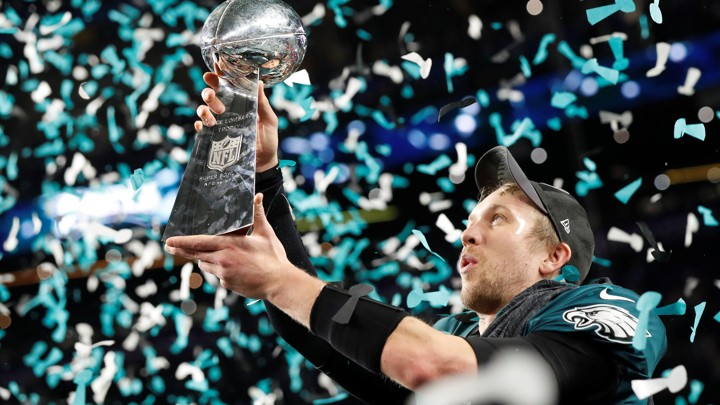

The one and only Nick Foles is the named MVP of the Super Bowl LII. Foles
is the first quarterback in 16 years to start the season as a backup and win
the Super Bowl. After receiving the MVP honors, Foles states "There's plenty
of kids watching this game right now dreaming about this moment, some day will
be here, and to be here with my daughter, my wife and my family, my teammates,
this city... we're very blessed." The primary reasons for his naming are because
of his three touchdown passes, and his unforgettable touchdown catch.
The success the team has with Foles and the run-pass play has been widely talked about throughout the playoffs. Thanks to the Eagles' coach, Pederson, the quarterback was able to benefit and this allowed the eagles to hold the lead during the game. As said by ESPN, "They were big time plays made by a big time quarterback. A Super Bowl champion and Super Bowl MVP. An underdog no more."
The official active team roster , in alphabetic order,can be found below
Data retrieved from here.